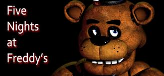
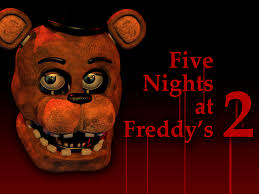

Five Nights at Freddy'sシリーズとは
Five Nights at Freddy'sシリーズとは、Scott Cawthon氏が開発したホラーゲームである。略称はFNaF。
プレイヤーは、Freddy Fazbear's Pizzaの夜間警備として、1週間働くことになる。
しかし、1つ問題がある。
Freddy Fazbear's Pizzaのマスコット人形達は、夜になると勝手に動き出し、襲ってくるのだ。
ライト、ドア、カメラ。あらゆる物を駆使し、君は5日間を生き残らなければならない…。
また、そのFreddy Fazbear's Pizzaには誰も知りえない、黒い秘密が存在していた…。

現在はFive Nights at Freddy's (通称「FNaF」「無印」)、

及び続編であるFive Nights at Freddy's 2、

Five Nights at Freddy's 3、
そしてシリーズ最終作と銘打たれた、Five Nights at Freddy's 4
が発売されている他、
外伝的立ち位置となる、Five Nights at Freddy's: Sister Locationや、
Freddy Fazbear's Pizzeria Simulatorなどがリリースされている。
また、シリーズ恒例の高難易度モードであるカスタムナイトだけをゲーム化した、
Ultimate Custom Nightもリリースされた。現在は、
他プラットフォームでもゲーム作品がリリースされており、
Illumixが開発を担当するスマートフォン用ゲームアプリFive Nights at Freddy's AR: Special Delivery、
Steel Wool Stadiosとの提携によって誕生した、
VR対応作品のFive Nights at Freddy's VR: Help Wanted、Five Nights at Freddy's VR: Help Wanted 2や、
VR非対応ではあるが、Five Nights at Freddy's: Security Breachなどの作品が輩出されつつある。
Steamストアで購入する事が出来、デモ版は(FNaF3を除き)Indie DBからダウンロードする事が可能。
iPad、iPhone、Android版も存在する。
作品や機種によって異なる場合があるが、1夜が約10分程度と、非常に気軽にできるホラーゲームである。
ちなみにゲーム開発のペースが異様に早く、特に無印から4までは1年以内にリリースされている。
この偉業は「1年間に最も多く続編をリリースしたゲーム」として、ギネス世界記録に認定された。
そして2024年2月9日に映画化もされ、※1エンディング曲にはファンソング(ファンの方が制作した)の
「Five Nights at Freddy's 1 Song」が使われた